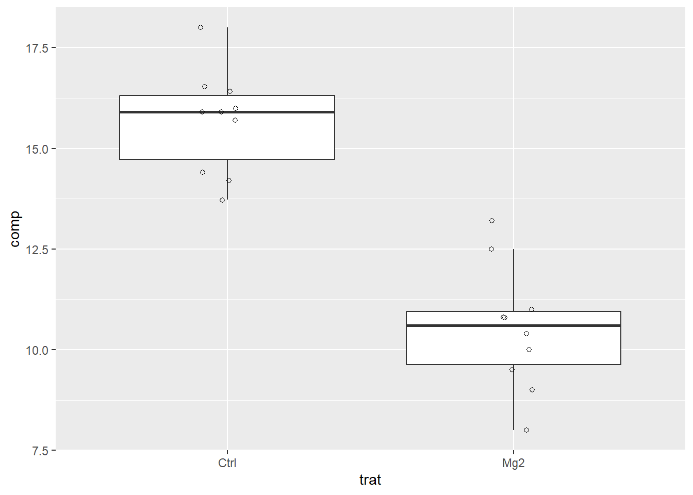
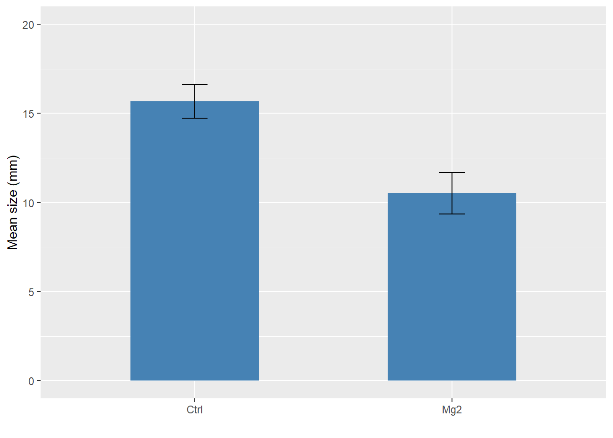
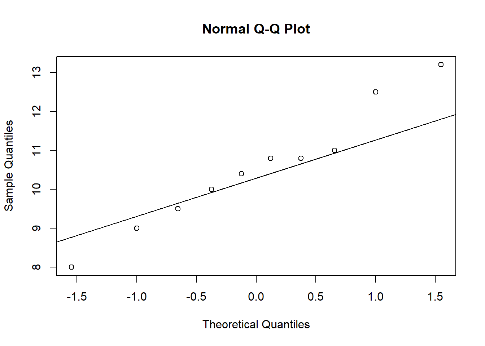

library(magrittr) # para usar pipes
library(ggplot2) # para gráficos
library(dplyr)
library(readxl)
library(tidyr)Amostras dependentes ou pareadas
Aula 9
Carregar pacotes
data_mg <- read_excel("dados-diversos.xlsx")
head(data_mg)# A tibble: 6 × 3
trat rep comp
<chr> <dbl> <dbl>
1 Mg2 1 9
2 Mg2 2 12.5
3 Mg2 3 10
4 Mg2 4 8
5 Mg2 5 13.2
6 Mg2 6 11 data_mg %>%
ggplot(aes(trat, comp)) +
geom_boxplot(outlier.color = NA) +
geom_jitter(width = 0.1, shape = 1)
dat2 <- data_mg |>
group_by(trat) |>
summarise(
mean_comp = mean(comp),
sd_comp = sd(comp),
var_comp = var(comp),
n = n(),
se_comp = sd_comp / sqrt(n-1),
ci = se_comp * qt(0.025, df = 9)#intervalo de confiança
)
dat2# A tibble: 2 × 7
trat mean_comp sd_comp var_comp n se_comp ci
<chr> <dbl> <dbl> <dbl> <int> <dbl> <dbl>
1 Ctrl 15.7 1.27 1.61 10 0.424 -0.958
2 Mg2 10.5 1.54 2.39 10 0.515 -1.16 dat2 |>
ggplot(aes(trat, mean_comp))+
geom_col(width = 0.5, fill = "steelblue")+
geom_errorbar(aes(
ymin = mean_comp - ci,
ymax = mean_comp + ci), width = 0.1)+
ylim(0,20)+
labs(x = "", y = "Mean size (mm)")
data_mg2 <- data_mg |>
pivot_wider(1,
names_from = trat,
values_from = comp)
data_mg2# A tibble: 10 × 3
rep Mg2 Ctrl
<dbl> <dbl> <dbl>
1 1 9 13.7
2 2 12.5 15.9
3 3 10 15.7
4 4 8 14.2
5 5 13.2 15.9
6 6 11 16.5
7 7 10.8 18
8 8 9.5 14.4
9 9 10.8 16.4
10 10 10.4 16 t.test(data_mg2$Mg2, data_mg2$Ctrl, paired = F)
Welch Two Sample t-test
data: data_mg2$Mg2 and data_mg2$Ctrl
t = -8.1549, df = 17.354, p-value = 2.423e-07
alternative hypothesis: true difference in means is not equal to 0
95 percent confidence interval:
-6.490393 -3.825607
sample estimates:
mean of x mean of y
10.520 15.678 attach(data_mg2) # vamos facilitar o uso dos vetores. Libera no ambiente os objetos
var.test(Mg2, Ctrl)
F test to compare two variances
data: Mg2 and Ctrl
F = 1.4781, num df = 9, denom df = 9, p-value = 0.5698
alternative hypothesis: true ratio of variances is not equal to 1
95 percent confidence interval:
0.3671417 5.9508644
sample estimates:
ratio of variances
1.478111 Normalidade e Heterocedasticidade
shapiro.test(Mg2)
Shapiro-Wilk normality test
data: Mg2
W = 0.97269, p-value = 0.9146shapiro.test(Ctrl)
Shapiro-Wilk normality test
data: Ctrl
W = 0.93886, p-value = 0.5404qqnorm(Mg2)
qqline(Mg2)
qqnorm(Ctrl)
qqline(Ctrl)
escala <- read_excel("dados-diversos.xlsx", "escala")
head(escala)# A tibble: 6 × 7
assessment rater acuracia precisao vies_geral vies_sistematico vies_constante
<chr> <chr> <dbl> <dbl> <dbl> <dbl> <dbl>
1 Unaided A 0.809 0.826 0.979 1.19 0.112
2 Unaided B 0.722 0.728 0.991 0.922 -0.106
3 Unaided C 0.560 0.715 0.783 1.16 0.730
4 Unaided D 0.818 0.819 0.999 0.948 -0.00569
5 Unaided E 0.748 0.753 0.993 1.10 0.0719
6 Unaided F 0.695 0.751 0.925 0.802 0.336 escala2 <- escala |>
select(assessment, rater, acuracia)|>
pivot_wider(1,
names_from = assessment,
values_from = acuracia)
escala2# A tibble: 10 × 3
rater Unaided Aided1
<chr> <dbl> <dbl>
1 A 0.809 0.907
2 B 0.722 0.913
3 C 0.560 0.915
4 D 0.818 0.960
5 E 0.748 0.959
6 F 0.695 0.903
7 G 0.807 0.851
8 H 0.781 0.880
9 I 0.776 0.950
10 J 0.618 0.944Teste não paramétrico
attach(escala2)
t_escala <- t.test(Aided1, Unaided,
paired = TRUE,
var.equal = FALSE) # Resultado: há efeito da escala
var.test(Aided1,Unaided) # Homocedasticidade
F test to compare two variances
data: Aided1 and Unaided
F = 0.17041, num df = 9, denom df = 9, p-value = 0.01461
alternative hypothesis: true ratio of variances is not equal to 1
95 percent confidence interval:
0.04232677 0.68605885
sample estimates:
ratio of variances
0.1704073 shapiro.test(Aided1) # Normalidade. p-value maior que 0,05, então não rejeita H0, logo os valores são homogeneos.
Shapiro-Wilk normality test
data: Aided1
W = 0.92775, p-value = 0.4261shapiro.test(Unaided) # p-value maior que 0,05, então não rejeita H0, logo os valores são homogeneos.
Shapiro-Wilk normality test
data: Unaided
W = 0.87462, p-value = 0.1131library(report)
report(t_escala)Effect sizes were labelled following Cohen's (1988) recommendations.
The Paired t-test testing the difference between Aided1 and Unaided (mean
difference = 0.18) suggests that the effect is positive, statistically
significant, and large (difference = 0.18, 95% CI [0.11, 0.26], t(9) = 5.94, p
< .001; Cohen's d = 1.88, 95% CI [0.81, 2.91])wilcox.test(Aided1, Unaided) # Teste não paramétrico equivalente ao teste t pareado. Utilizar esse teste se houvesse problemas com a normalidade e homocedaticidade.
Wilcoxon rank sum exact test
data: Aided1 and Unaided
W = 100, p-value = 1.083e-05
alternative hypothesis: true location shift is not equal to 0escala |>
ggplot(aes(assessment, precisao)) +
geom_boxplot(outlier.color = NA)